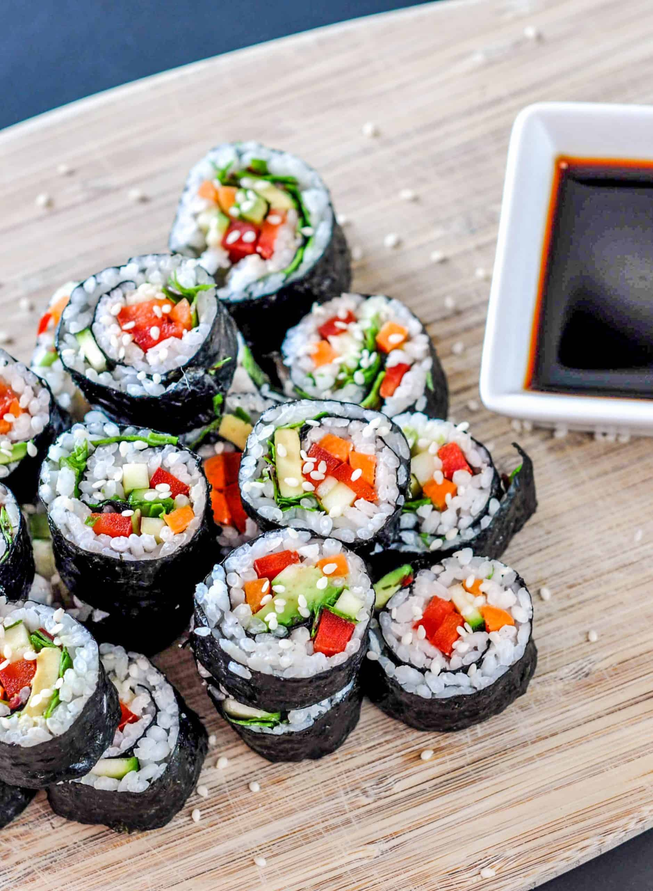

Home
Vegan Sushi

Ingrediants
Cake
- 1 cup of uncooked sushi rice
- 1 ½ cup water
- 1 tablespoon vegetable oil
- ½ tablespoon rice vinegar
- 1 teaspoon sugar
- 1 teaspoon kosher salt
- 4 sheets of nori
- 1 red bell pepper, thinly sliced
- 1 cucumber, thinly sliced
- ½ avocado, thinly sliced
- 1 cup chopped greens
- 1 teaspoon sesame seeds
- optional - tamari or soy sauce